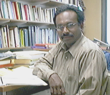

|
LIYANAGE
AMARAKEERTHI is a doctoral student in the Department of Languages
and Cultures of Asia at the University of Wisconsin-Madison and an award-winning
writer of fiction in the Sinhala language. His fourth collection of
stories, Mama Den Nidami (Now, I Sleep), was named best collection
of short stories at the National Literary Festival in Sri Lanka in 2000.
His doctoral research focuses on the poetics of Sinhala prose but he
also has a continuing interest in Urdu literature in translation.
|
|  |
| May 2003 (Madison, WI) |